The stars of the show were the Barnacle Geese. We were in the gathering period, after breeding time, when the geese form large groups to forage and roost together before starting their southbound migration. Seeing them assembled on the stubble fields was already impressive, but the sight and sound of thousands of them flying above our heads was a show like no other. It gave me goosebumps, they were so appropriately named that day! In the forest, we chased small songbirds like that young European Robin that was elusive at first, but then perched on a pine tree to preen and sing softly. Two Great Spotted Woodpeckers had a chat high in the trees, but it's only later, when one dug into a tree for food, that we could spot them. The coastal meadow had been cut, to prevent bushes from encroaching on it, and that gave us great views on mudflats where waders waded: Common Greenshank, Spotted Redshank and a rare Black-tailed Godwit were the stars of the show, until a small raptor dashed in and scared all of them. First I thought it was a Eurasian Sparrowhawk, but it landed in the mud and stayed still for a few minutes, letting us appreciate what actually was a Merlin. First time I see one with clients! On the island, the White-tailed Eagle pair was back on its favourite tree. They hid in the shade, but their big yellow bills betrayed their presence.
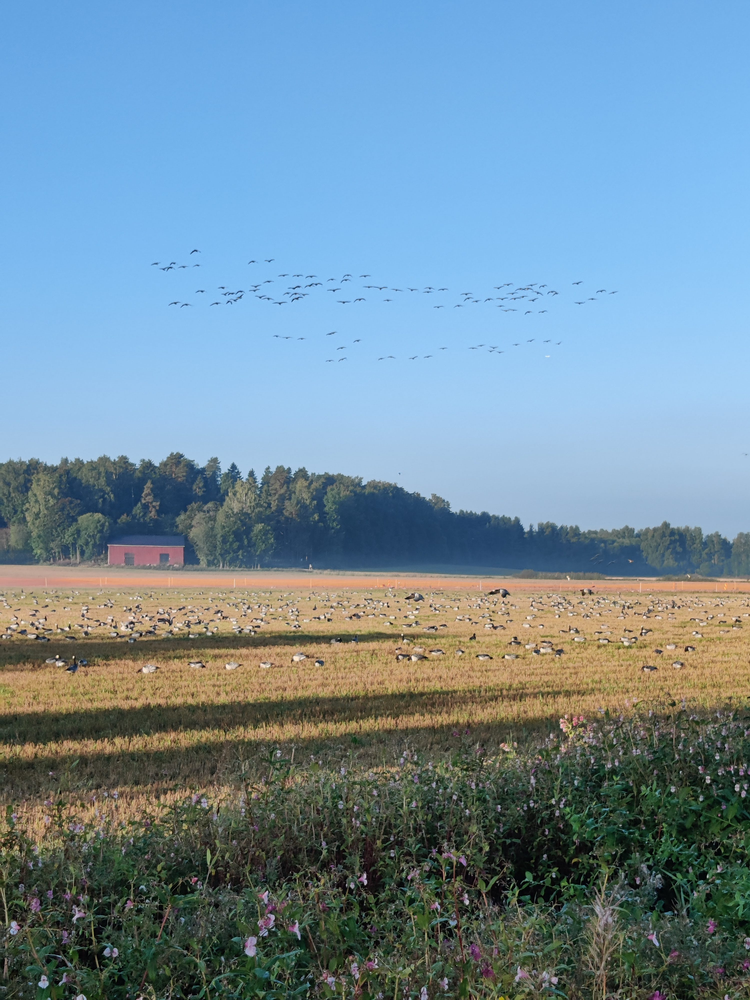
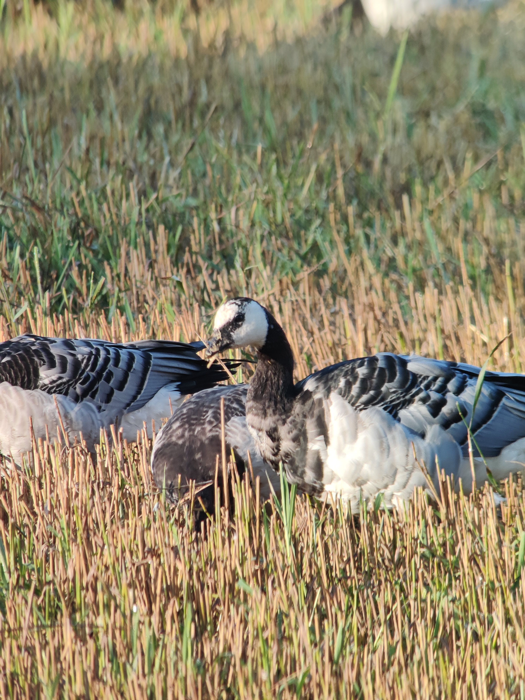
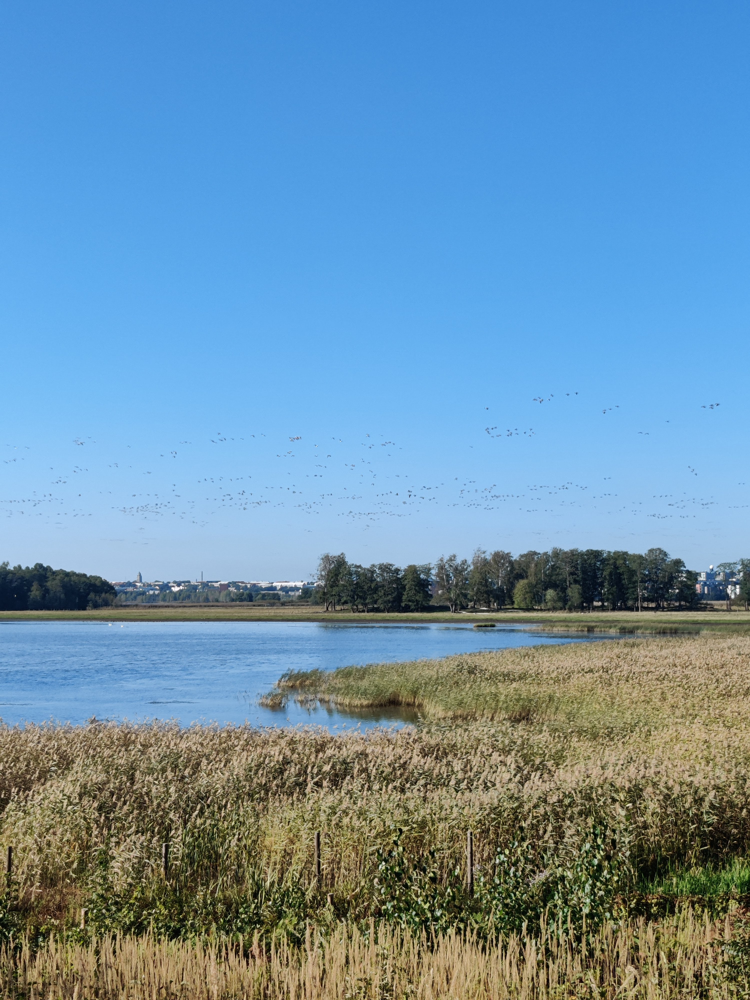
Laajalahti with Moritz
With a bit more mud visible today, we found a great assortment of waders, including a large group of stunning Common Ringed Plovers and two Common Greenshanks. Suddenly, from the birders to our right came a shout: Spotted Crake! That reclusive bird was walking in the open, on the edge of the reedbed. Wow, that's not one I see too often! Though it was in the shade, we had some great views. Dozens of White Wagtails buzzed around, always on the move, and Caspian Terns let their creaky voices echo throughout the gorgeous morning. In the distance, two young Western Marsh Harriers glided, periodically scaring the Common Teals. Flying from treetop to treetop, Eurasian Siskins entertained us with their antics. They are very numerous around Helsinki this end-of-summer. I looked at the spot where the crake had disappeared, hoping to see it again... but instead I found a Bluethroat! What a morning, I couldn't believe it. Of course it wasn't in breeding plumage, but still, that's a fine bird I don't regularly see. With that in the bag, we went for a walk and found a few more species, such as a singing Common Chiffchaff and a Red Squirrel. As we were parting ways, two loud Black Woodpeckers flew right above. A spectacular send-off for a memorable morning!
Laajalahti with Amy
Pushed by the wind, the waters of the Baltic Sea had completely covered the mudflats in front of the platform! That doesn't mean there was no bird to see, but the concentration of waders on migration was a bit lower than expected. We saw ducks (all the dabbling species expect Northern Pintail, which is rarer), geese, Grey Herons and a few small birds typical of that biotope, like Sedge Warbler and Common Reed Bunting. There were even two Common Cranes roosting in the meadow. Common Snipes, zooming around as always, clearly looked for a place to land, but could find none... one of them touched down on the water, but it clearly didn't feel comfortable swimming because it quickly took off. Just before we left, two young Spotted Redshanks emerged from the grass. Where had they been hiding all this time? Walking around the bay, we spotted a family of Red-backed Shrike on the hunt. Perched on fenceposts, they watched then pounced into the adjacent field. Further, insects disturbed by cattle moving through a field attracted Western Yellow Wagtails.
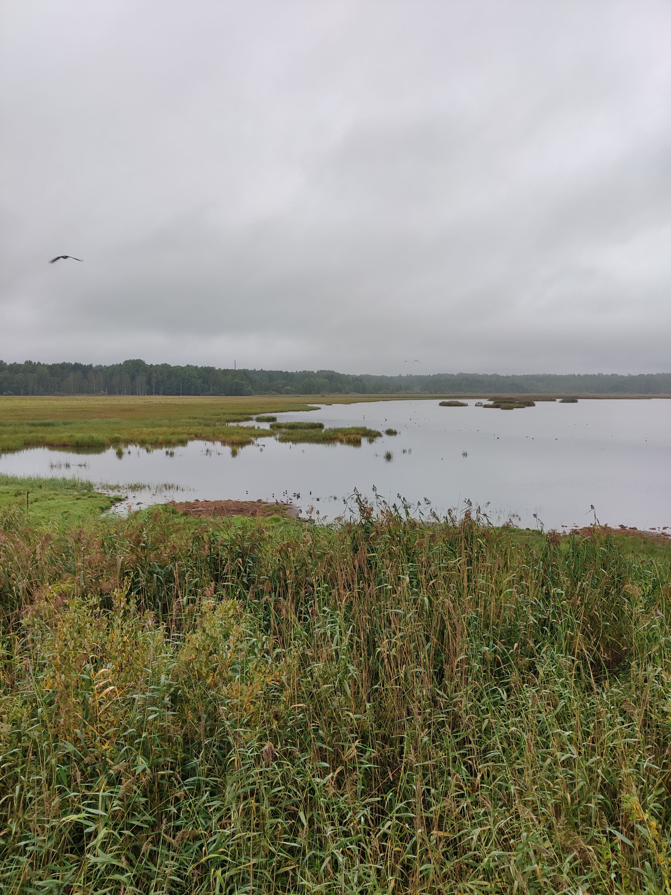
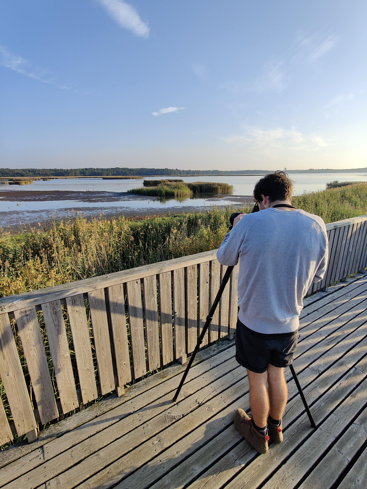
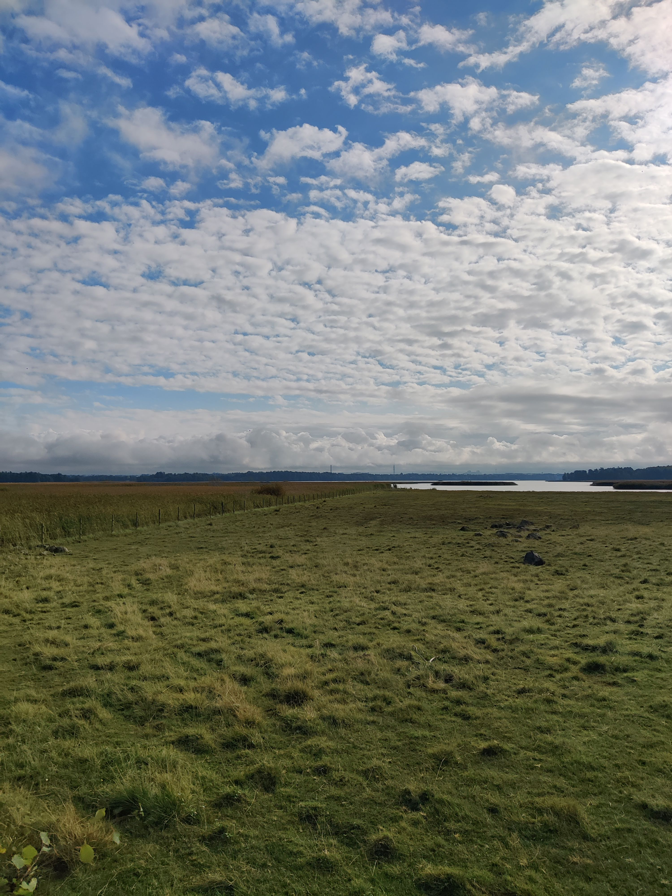
Vanhakaupunginlahti with Jenny, Nancy, Christine and Jonathan
For a change, I planned an evening tour. With the light coming from the north-west, we had great views of the bay from the other side, and could enjoy the countless ducks, crows and gulls that graced its shores. Among them, we found a few gems like a Common Ringed Plover, a pair of Caspian Terns and a Great Egret. Reinforced with young ones from this summer, murmurations of starlings foraged on the fields, only disturbed by an adventurous Eurasian Sparrowhawk that also got into a quarrel with the local corvids. Barn Swallows hunted above the reedbed, possibly attracting the Eurasian Hobby that we saw flying above our heads at full speed. In addition to birds, I enjoyed telling about Finnish nature, history and lifestyle, and we all had a very pleasant walk.
Laajalahti and Suomenoja with Steve and Judy
Sometimes we have a Common Chiffchaff day, and sometimes we have a Willow Warbler day. That morning was definitely a chiffchaff one: we heard several of them singing along our path (we even saw one!) while Willow Warblers were a lot more secretive. Several other warblers showed up, but we were most impressed by the waders that were already on autumn migration: Common Snipes, Dunlins and Wood Sandpipers were the most numerous, but we also saw a few Temminck's Stints, two stunning Curlew Sandpipers and a Green Sandpiper. A Caspian Tern fished in the bay, a Western Osprey flew over our heads with a fish in its talons, and a group of Bearded Reedlings fluttered in the reedbed. In the forest, a young Song Thrush checked us out, completely unafraid.
In Suomenoja, we were greeted by a ballet of finches: Eurasian Chaffinch, European Goldfinch and Eurasian Siskin are all colourful species! In the water, ducks of all species and ages swam by, but the Black-headed Gulls had moved out. It was time to close the season there and wait for spring in other birding spots.
Greater Helsinki tour with Susanne and Adrian
We started our day tour in Vanhakaupunginlahti, where we met many local birds. The White-tailed Eagles were not at home, sadly, but a stunning Common Rosefinch stole the show. It was a new bird for Adrian! As we tried to relocate it, we found Common Linnets (another red bird!) and several Red-backed Shrikes, while young Barn Swallows flew very close around us. Sometimes, their parents brought some food to them mid-air, which is quite acrobatic and fun to watch.
Moving on to the other side of the city, we found another new species for Adrian: the wonderful Horned Grebe. Most of them had a winter-like plumage, but we found one still sporting close-to-breeding colours. Around them, we observed many families of surface and diving ducks. The Common Pochards always showed up with a muddy face, I think they fed at the bottom of the pond.
Finally, we closed the day at a more rural wetland, where we found a few pairs of Common Cranes. Soon, they will congregate there before leaving Finland for warmer winter quarters.
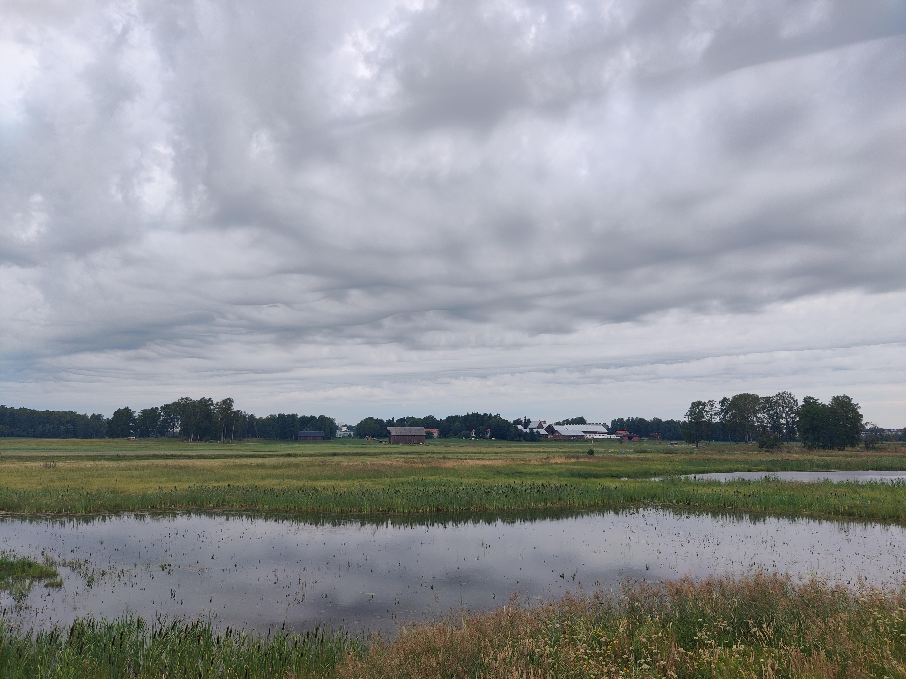
Laajalahti and Suomenoja with Mary
We started our 6-hour tour in Laajalahti, on a bird tower overlooking mudflats and reedbeds. The incessant calls of a Common Redshank alerted us to the presence of a Red Fox, while Common Snipes flew by. We watched a great assortment of waders that day, including Temminck's Stint and Little Ringed Plover. Over the water, two Western Ospreys hovered. As we walked around the bay, Eurasian Blackcaps sang, and a male Red-backed Shrike delivered big grasshoppers to its hungry offsprings. Then we took the tram and metro to reach the wonder-wetland of Suomenoja. The water there was covered in waterfowls, with Common Pochard and Horned Grebe featuring prominently. All had babies around, either wandering on their own, like Common Goldeneyes, or floating in a line under their mother's supervision, like Northern Shovelers. The local Black-headed Gulls defended their colony against Hooded Crows and a Western Marsh Harrier, and a group of Eurasian Siskins fed in alder trees.
Vanhakaupunginlahti with Allison
Our outing started with a bang: a Common Moorhen with 4 adorable, tiny and fluffy babies, feeding on the edge of a wetland and then preening. It was wonderful! Later, as we looked at the bay and admired the regulars (yes, the White-tailed Eagles were there again!), I was surprised by a Red Fox being chased by a cow. Soon after, Allison spotted a kit sleeping on a log, and another one playing nearby. They were far away, but the experience was great. From Yellowhammers to Common Whitethroats, many songsters put up a show for us, but none better than a Marsh warbler perched on fireweed that delivered a crescendo of mimicry, including Great Tit and Common Rosefinch. Incredible!
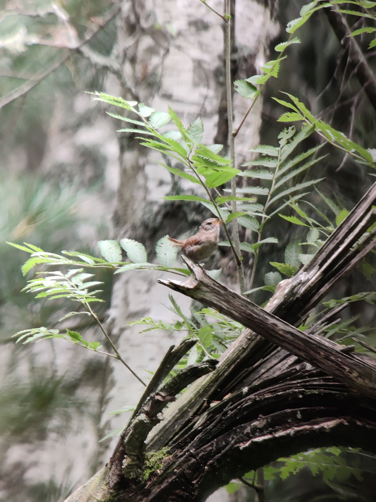
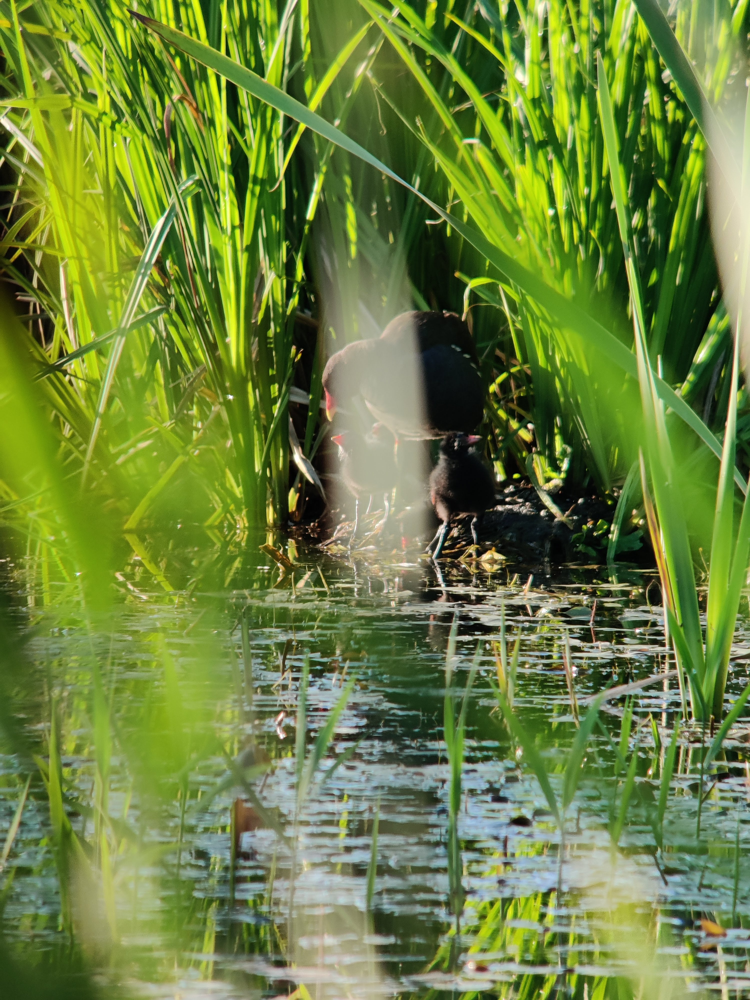
Vanhakaupunginlahti with Monique
Summer weather in Helsinki is often unstable, and Monique's outing fell on a cool windy day... which wasn't necessarily an unpleasant thing! The woods were rather quiet, but the wetlands were spectacular: the White-tailed Eagles were at home again, a Whooper Swan trumpeted across the bay and a pair of Bearded Reedlings jumped from reed to reed in front of us. That's a bird I rarely see with my clients, so they filled my heart with joy! Stock Doves landed in the mud, Common Greenshank belted out their high-pitched flight call, and a Roe Deer with pretty antlers walked through the grass. Other waders included a Common Snipe in close range and a beautiful male Ruff still in breeding attire. The latter foraged for a while with a family of Common Teals, while a Common Rosefinch briefly sang: "pleased to meet you, please to meet you!".
Vanhakaupunginlahti with Michael and Jodie
Like a rocket, it dived through the trees towards the small wetland. I backtracked, and confirmed that a spectacular Spotted Redshank, in its all-black suit, had indeed just landed! It's always great to kick-off a tour with one of my favourite birds! We continued on with a Northern Lapwing protecting its chick on the field and a flurry of common birds (for me) that can be thrilling to discover (when you come from Australia, for instance!): Hooded Crow, Western Jackdaw... they are beautiful species too! Dodging rain showers, we explored the woods and were rewarded with the sight of three tiny baby Willow Warblers huddling together in a bush, the parents repeatedly coming to feed them. After Wood Sandpipers and Common Reed Buntings, we closed the morning with a mother Eurasian Wigeon and her two chicks crossing the path.
Later, Michael joined me for a spectacular photography outing in Suomenlinna...
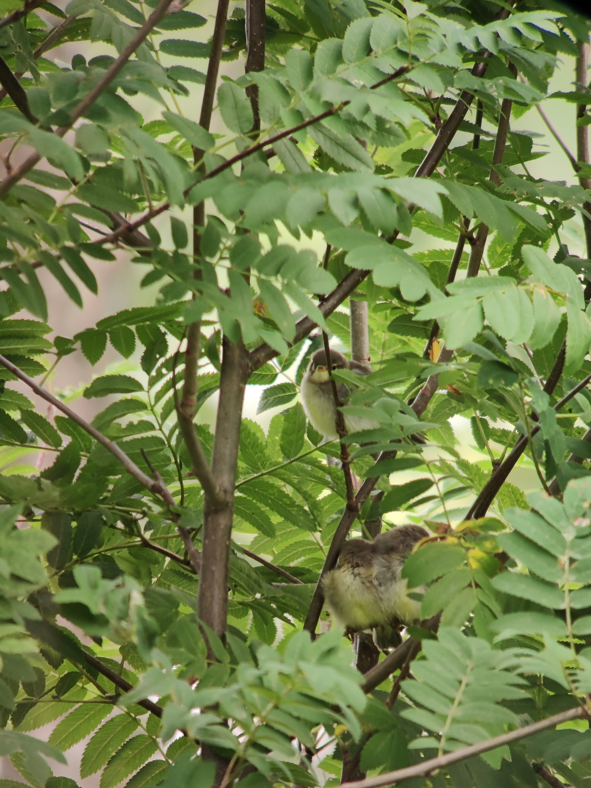
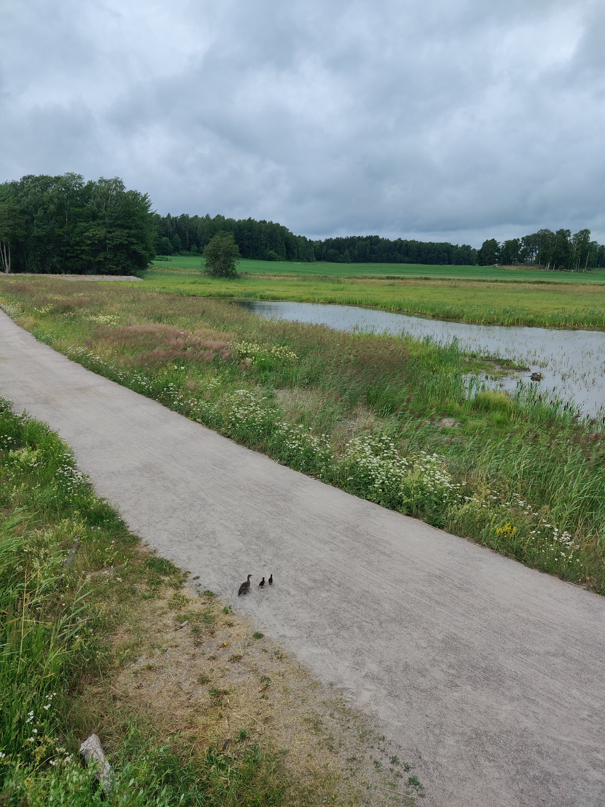
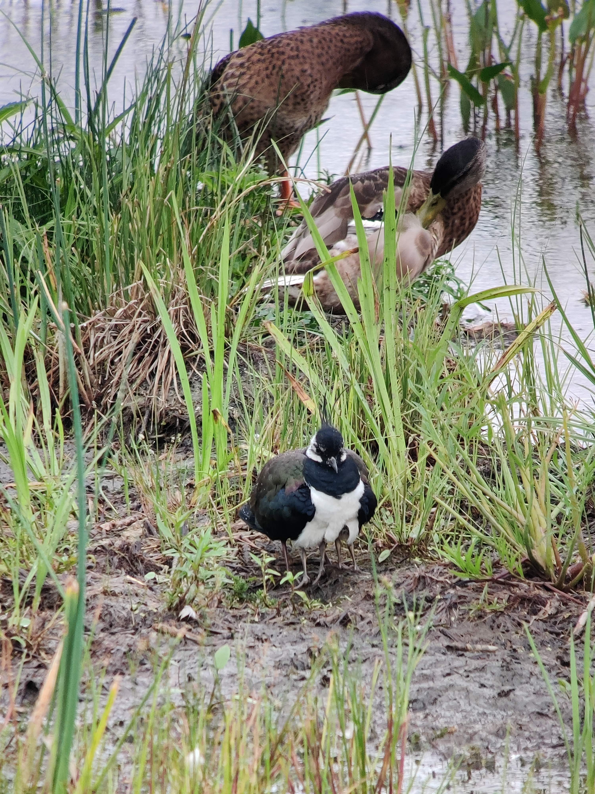
Vanhakaupunginlahti with Esther and Edwin
The first birds we encountered on that sunny day, which was also Edwin's birthday, were Barnacle Geese and their adorable fluffy babies. Further, the riparian forest was alive with the calls of smaller baby birds (robins, tits, chaffinches...) and the exuberant trill of the Icterine Warbler. What a show! Busy as we were, it took us a while to reach the reedbed, but there again we were treated to a great show. The best bird? Probably a stunning Eurasian Hobby hunting dragonflies and eating them in the air, but a territorial Western Yellow Wagtail of subspecies thunbergi wasn't too bad either! We heard a Common Rosefinch among the chatter of Sedge Warblers. At the last viewpoint, the regular White-tailed Eagle pair was sitting in its favourite tree while several waders announced the beginning of autumn migration.
Laajalahti with Phil and Linda
A symphony of birds greeted us as we stepped on the path to the wetlands: chaffinches, tits, pigeons and moorhens made themselves heard first, and then it was Sedge Warblers delivering their scratchy songs from trees and reeds. We could hear Common Rosefinches too, but they remained out of sight for a long time... until we found a female singing at the top of a birch! In the meantime, Barnacle and Canada Geese wandered on the mudflats with their newborn chicks, among Caspian Terns and Western Yellow Wagtails. A Marsh Warbler sang for a while in the open, at eye level, letting us appreciate the difficulties of reed warbler identification. A Lesser Spotted Woodpecker jumped from tree to tree while a European Honey Buzzard soared high in the sky. We spotted several more female rosefinches, but it's only at the end that a superb male showed at the top of a shrub. A fine ending for a fine tour!
Vanhakaupunginlahti with Nickie and Kevin
The highlight of our outing surely was the Common Rosefinch that time. This gem of a bird, in its stunning dark red outfit, put up a show for us in the reedbed and in the adjacent trees, often belting out its characteristic "pleased to meet you" song. The female wears a more subtle brown, but we got great views of one as it fed on dandelions right in front of us. In the forest, we did a comparative thrush study as a Common Blackbird, a Redwing and a Song Thrush foraged side by side, and in the fields we enjoyed the flight song of the Eurasian Skylark, and the plastic toy squeals of the Northern Lapwings as they chased crows and gulls from their territories.
Vanhakaupunginlahti with Joe and Rebecca
I was delighted to welcome Joe and his mom to Helsinki for the first warm day of the year! The woods were brimming with life, with the first Phylloscopus warblers out in force: finally, Common Chiffchaffs, Willow and Wood Warblers had come back! We even saw two of the latter on the ground, fighting... or was it some sort of violent courting? Whatever they were doing, they let us approach very close. Birding in the forest at this time of year is a joy, because the trees don't have leaves yet. Thus, we admired the warblers but also Tree Pipits and Great Spotted Woodpeckers with no obstruction. There was a lot of activity on the mudflats too, with a group of Ruffs constantly flying left or right, and stunning Western Yellow Wagtails doing exactly the same. The antics of Common Snipes in display above our heads caught our attention, until the local pair of White-tailed Eagles came to their tree. What a sight it was to see those giants slowly glide into view!
Lauttasaari with Judith
I met Judith at her hotel, and after a walk through a central park that yielded common species but not the Ural Owl that had been spotted in the prior days, we took the metro to Lauttasaari for some coastal birding. Once again I was reminded how beautiful some of our most common birds are, and what a delight it is to have Eurasian Blue Tits, Great Spotted Woodpeckers and Northern Ravens near home! The sea ice was in tatters, and Common Goldeneyes displayed on patches of open water. As we were about to leave, a distant White-tailed Eagle revealed itself. It flew over the sea, once again harassed by crows. Among the ferries, a large group of Long-tailed Ducks practiced synchronized diving. They were far away, but the scope let us enjoy the show nonetheless!
Vanhakaupunginlahti with Alistair
Birding in winter can be a little lackluster, but we are sure to find life around bird feeders... and that's what happened again with Alistair. A flurry of Eurasian Greenfinches, Eurasian Tree Sparrows and European Goldfinches delighted us for a while, with Eurasian Bullfinches playing hard to get by staying on top of the trees. Nearby, a relaxed young Eurasian Sparrowhawk preened on a branch, almost at eye level. The Long-eared Owl I was hoping to find wasn't at home, but a superb Great Grey Shrike hunted on the ice-covered fields, using the fence as a perch. Further away, a majestic White-tailed Eagle sat on the ice while a cheeky Hooded Crow tried to pull feathers from it. What a sight!
Vanhakaupunginlahti with Carole
This time, the weather was rather unpleasant, with constant drizzle and a bit of wind. I had warned Carole, though, and we were all determined to make it a great morning of birding nonetheless. Late autumn brings different birds to Helsinki, and the stars of the show definitely were the Smews, fascinating northern ducks that are regular at that time of year. They gave use great views from the birdtowers. A rare Little Grebe was there too, along with a cohort of Common Ravens. In the forest, we found a bustling group of migrating songbirds that included my first Bramblings of the year but also Yellowhammers and Common Chaffinches. We finished our outing with majestic Whooper Swans quarrelling in the fields.
Greater Helsinki tour with Tim, Helen and Patrick
This extended full-day program took us to a variety of places around Helsinki, with Tim at the wheel, searching for specific species. We started in eastern Helsinki, where a distant Greater Scaup stirred a bit of excitement. We also had fantastic views of a group of Goldcrests at eye level - they are usually high in the trees! A pair of Tawny Owls (one rufous, one grey) huddling at the top of a chimney was the icing on the cake. We then moved on to farmlands that were a bit too quiet to my liking, but lunch break proved productive when a Black Woodpecker, one of Patrick's targets, came to perch in a nearby stand of tall spruce. The sparrows even got to enjoy a taste of the cinnamon buns we (momentarily) abandoned on the table in our haste to watch the woody! Later, tens of Common Cranes and Bean geese embodied the wonders of migration time, along with a lone Peregrine Falcon and a putative Pallid Harrier seen from the car.
Vanhakaupunginlahti with Mark
It's on a grey but rather warm morning that I met Mark. The wetlands of Vanhakaupunginlahti offered a fantastic range of waterfowl, with all the surface ducks (including Northern Pintail and Northern Shoveler), geese and swans present. It was a bit late in the year for waders, but we still got great views of two Spotted Redshanks, and the sleek Great Egret showed well too. The woodlands were rather quiet, though with a bit of patience we managed fine views of Goldcrests and Northern Wrens, the smallest birds in Europe. We looked for the long-staying Caspian Gull, to no avail, and finished the tour with a gorgeous Goosander near the rapids.
Laajalahti with Nikita
With water levels even higher than a few days before, I feared there would be no wader to show to Nikita from the birdtower... but we were in luck, for a quite a few remained on the emerged land right in front of us, among sleepy Barnacle Geese: Ruffs and Dunlins ran in the mud while Northern Lapwings and Common Snipes offered the fascinating aerial show they are known for. We found migrating Tree Pipits at the edge of the woods, and Western Yellow Wagtails in the fields, and enjoyed the last warblers of the year, including an inobstrusive but attractive Garden Warbler. We finished our tour with the national bird of Finland, the elegant Whooper Swan.
Laajalahti with Jeff
I met Jeff at dawn, and together we ventured into the mists of Laajalahti. Fortunately, it all cleared up as the sun rose, and we were treated to a fantastic assortment of waders. Because the water level was so high, they were all concentrated in a small area, and we had fantastic views of Curlew Sandpipers and Spotted Redshanks, among others. Behind us, young Red-backed Shrikes on migration hunted in the reedbed. As we walked around the bay, enjoying the chatter of countless songbirds, a loud call echoed nearby: it was a Black Woodpecker! It took us a while to spot it, but finally there it was, digging into a tall dead birch. What a spectacular bird! At the end of our tour, a Red Fox in a field and a fast Eurasian Sparrowhawk put a nice final touch to a great morning of birding.